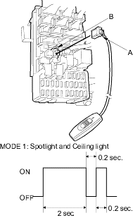

MPCS Service Connector 07WAZ-0010100
- Check the No. 9 (10 A) fuse in the under - hood fuse/relay box and the No. 10 (7.5 A) fuse in the under-dash fuse/relay box.
Are the fuses OK?
YES – Go to step 2.
NO – Find and repair the cause of the blown fuse. 
- Remove the dashboard lower cover (see page 20-75).
- Turn the ignition switch ON (II).
- Check self-diagnosis function Mode 1 for a diagnostic trouble code (DTC) by connecting the special tool (A) to the multiplex control inspection connector (B). After about 5 seconds, the spotlight and ceiling light should come on then blink 0.2 second. This means that you are in Mode 1 of the self-diagnosis function.

- If there is a DTC, it will blink, pause, then repeat the DTC as long as the ignition switch is ON (II).
Is there a repeating DTC?
YES – Count the blinks, then go to step 8.
NO – See if the SCS circuit is working properly. Go to step 6.
- Check for continuity between the inspection connector T1 and T3 terminals.
Is there continuity?
YES – Go to step 7.
NO – Faulty under-dash fuse/relay box, replace it and recheck for DTCs.
- Check for continuity between the connector J of under - dash fuse/relay box No. 4 terminal and body ground.
Is there continuity?
YES – Go to step 9.
NO – Repair the open in the wire and recheck for DTC's.